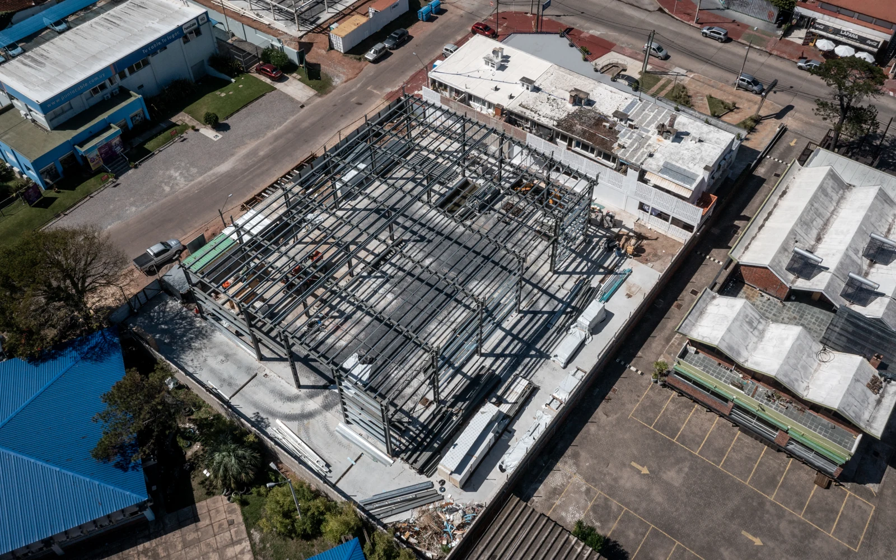
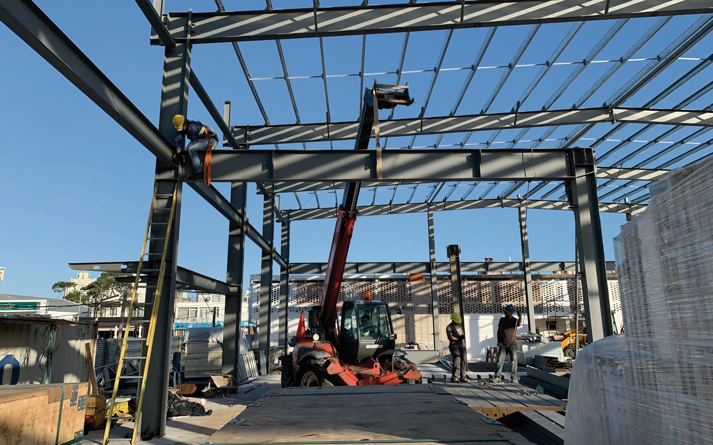

03 / PROYECTO
Classic
Cars
Proyecto de showroom, taller y guardería para vehículos clásicos y deportivos.
El proyecto reúne un showroom y un área de mecánica ligera en planta baja, mientras que la planta alta se concibe como un espacio de planta libre destinado a guardería y exhibición de vehículos clásicos y deportivos.
En el centro de la planta baja se concentra un núcleo de servicios, oficinas y depósito, que organiza el programa sin interferir con la circulación vehicular. La propuesta prioriza el ingreso de luz natural, la amplitud de maniobra y la fácil circulación. Un ascensor vehicular conecta ambos niveles y permite trasladar los vehículos a la planta superior.


